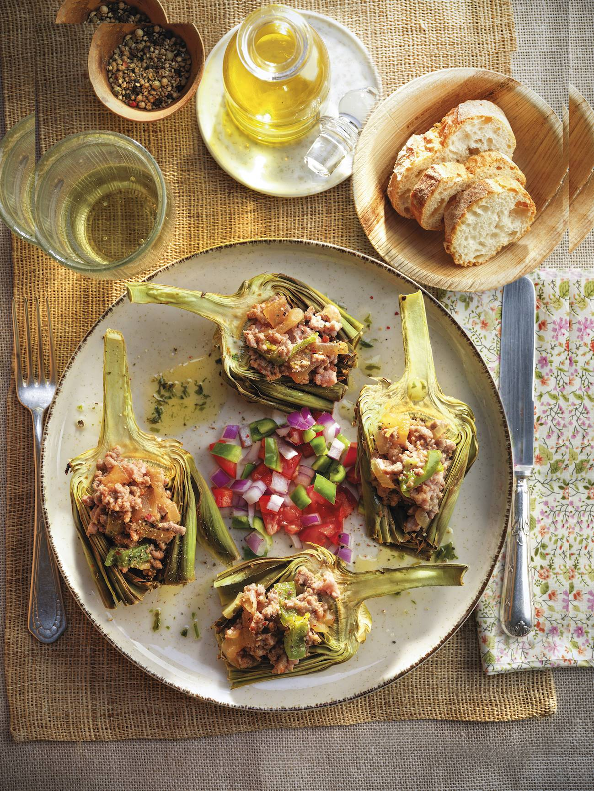

ALCACHOFAS AL HORNO CON PICO DE GALLO

INGREDIENTES
- 4 alcachofas
- 1 limón
- 400 g de carne picada (mitad ternera, mitad cerdo)
- 1 cebolla blanca
- 1 cebolla morada
- 100 g de tomate frito
- 2 tomates maduros
- 1 chile jalapeño
- 2 limas
- Pimienta
- 4 manojitos de cilantro
- Aceite de oliva, sal
PREPARACIÓN
- Paso 1. Precalentar el horno a 180 °C.
- Paso 2. Pelar los tallos de las alcachofas, sin cortarlos; retirar las hojas exteriores y regarlas con el zumo del limón. Pasarlas a la placa, cubrirlas con papel vegetal y hornear 40 minutos. Darles la vuelta y asarlas 10 minutos más.
- Paso 3. Lavar el cilantro y trocearlo con las manos. Disponer en el vaso de la batidora, junto con 50 ml de aceite, y triturar. Añadir más aceite (unos 50 ml), poco a poco y sin dejar de batir, hasta obtener una salsa suave.
- Paso 4. Pelar la cebolla blanca y cortarla en juliana; dorar en una sartén con un fondo de aceite. Agregar las carnes y rehogarlas hasta que estén hechas. Incorporar el tomate frito, salpimentar y mezclar.
- Paso 5. Preparar el pico de gallo. Lavar los tomates y el chile, y pelar la cebolla morada; cortar todo en dados y regarlos con el zumo de las limas.
- Paso 6. Cortar las alcachofas por la mitad a lo largo y rellenarlas con la preparación de carne. Repartirlas en los platos, con el pico de gallo, y decorar con el aceite de cilantro.